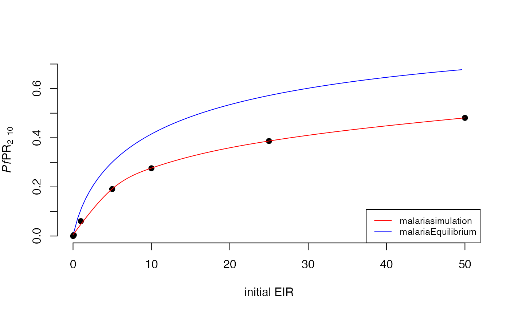

EIRprevmatch.RmdBegin by parameterizing the model you wish to run. Be sure to include any seasonality factors and interventions you want to include at baseline.
year <- 365
human_population <- 5000
params <- get_parameters(list(
human_population = human_population,
average_age = 8453.323, # to match flat_demog
model_seasonality = TRUE, # assign seasonality
g0 = 0.284596,
g = c(-0.317878, -0.0017527, 0.116455),
h = c(-0.331361, 0.293128, -0.0617547),
prevalence_rendering_min_ages = 2 * year, # set prev age range
prevalence_rendering_max_ages = 10 * year,
fvt = 0,
v = 0,
severe_enabled = T,
individual_mosquitoes = FALSE))
# set species / drugs / treatment parameters
params <- set_species(params, species = list(arab_params, fun_params, gamb_params),
proportions = c(0.25, 0.25, 0.5))
params <- set_drugs(params, list(AL_params))
params <- set_clinical_treatment(params, 1, c(1), c(0.45))Now run malariasimulation over a range of EIRs. The goal is to run enough points to generate a curve to which you can match PfPR2-10 to EIR effectively.
# loop over malariasimulation runs
init_EIR <- c(0.01, 0.1, 1, 5, 10, 25, 50) # set EIR values
# run model
outputs <- lapply(
init_EIR,
function(init) {
p_i <- set_equilibrium(params, init)
run_simulation(5 * year, p_i) # sim time = 5 years
}
)
# output EIR values
EIR <- lapply(
outputs,
function(output) {
mean(
rowSums(
output[
output$timestep %in% seq(4 * 365, 5 * 365), # just use data from the last year
grepl('EIR_', names(output))
] / human_population * year
)
)
}
)
# output prev 2-10 values
prev <- lapply(
outputs,
function(output) {
mean(
output[
output$timestep %in% seq(4 * 365, 5 * 365),
'n_detect_730_3650'
] / output[
output$timestep %in% seq(4 * 365, 5 * 365),
'n_730_3650'
]
)
}
)
# create dataframe of initial EIR, output EIR, and prev 2-10 results
EIR_prev <- cbind.data.frame(init_EIR, output_EIR = unlist(EIR), prev = unlist(prev))Now plot your results! Code is included to compare the results of matching PfPR2-10 to EIR based on malariaEquilibrium (blue line) versus matching based on parameterized malariasimulation runs (red line). Notice that the generated points do not form a smooth curve. We ran malariasimulation using a population of just 5,000. Increasing the population to 10,000 or even 100,000 will generate more accurate estimates, but will take longer to run.
# calculate EIR / prev 2-10 relationship from malariaEquilibrium
eir <- seq(from = 0.1, to = 50, by=.5)
eq_params <- malariaEquilibrium::load_parameter_set("Jamie_parameters.rds")
prev <- vapply( # calculate prevalence between 2:10 for a bunch of EIRs
eir,
function(eir) {
eq <- malariaEquilibrium::human_equilibrium(
eir,
ft=0,
p=eq_params,
age=0:100
)
sum(eq$states[2:10, 'pos_M']) / sum(eq$states[2:10, 'prop'])
},
numeric(1)
)
prevmatch <- cbind.data.frame(eir, prev)
# calculate best fit line through malariasimulation data
fit <- predict(gam(prev~s(init_EIR, k=5), data=EIR_prev),
newdata = data.frame(init_EIR=c(0,seq(0.1,50,0.1))), type="response")
fit <- cbind(fit, data.frame(init_EIR=c(0,seq(0.1,50,0.1))))
# plot
plot(x=1, type = "n",
frame = F,
xlab = "initial EIR",
ylab = expression(paste(italic(Pf),"PR"[2-10])),
xlim = c(0,50),
ylim = c(0,.7))
points(x=EIR_prev$init_EIR,
y=EIR_prev$prev,
pch = 19,
col = 'black')
lines(x=fit$init_EIR,
y=fit$fit,
col = "red",
type = "l",
lty = 1)
lines(x=prevmatch$eir,
y=prevmatch$prev,
col = "blue",
type = "l",
lty = 1)
legend("bottomright", legend=c("malariasimulation", "malariaEquilibrium"), col=c("red", "blue"), lty = c(1,1), cex=0.8)
Now extract values from the fitted line to generate EIR estimates at your desired PfPR2-10 values.
# Pre-intervention baseline PfPR2-10 starting at values 10, 25, 35, 55
PfPR <- c(.10, .25, .35, .45)
# match via stat_smooth predictions
match <- function(x){
m <- which.min(abs(fit$fit-x)) # index of closest prev match
fit[m,2] # print match
}
eir <- unlist(lapply(PfPR, match))
cbind.data.frame(PfPR, eir)
#> PfPR eir
#> 1 0.10 2.3
#> 2 0.25 6.9
#> 3 0.35 11.9
#> 4 0.45 26.2